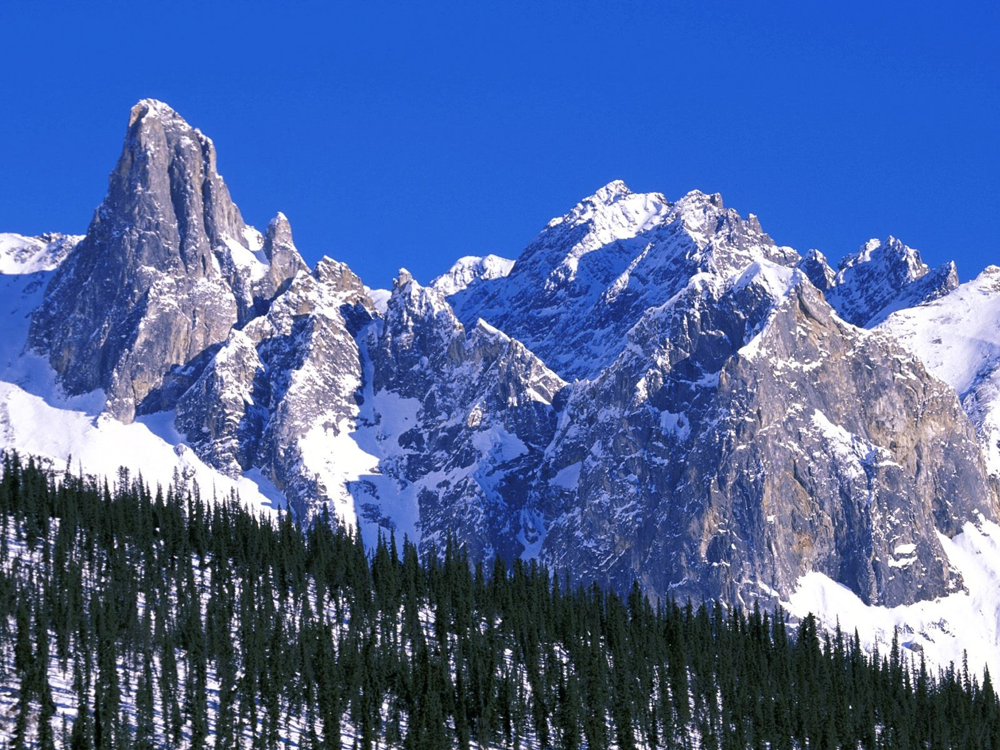

Envia
Population: 5 million
Cities: Named after famous people in that world: Isharpa, Anastasia, Shelby, Ztarlon, Instep, Paris, Stellar and Iris.
Language: Izen but everyone can write Faden because of school.

Since Envia has a larger population and a variety of climatic activity and resources most of their wealth remains amongst the country and they only trade what they don’t need for medicine. Envia Island (iris, paris and Stellar) is the main farming city of Envia, Anastasia is mining, Istarpa is business and production, Instyp is fishing, Shelby is also production, They have large mountains that loom over many of their cities that are known for their amazing ski fields and glaciers. But there are also nice walking trails and waterfalls in the mountains.